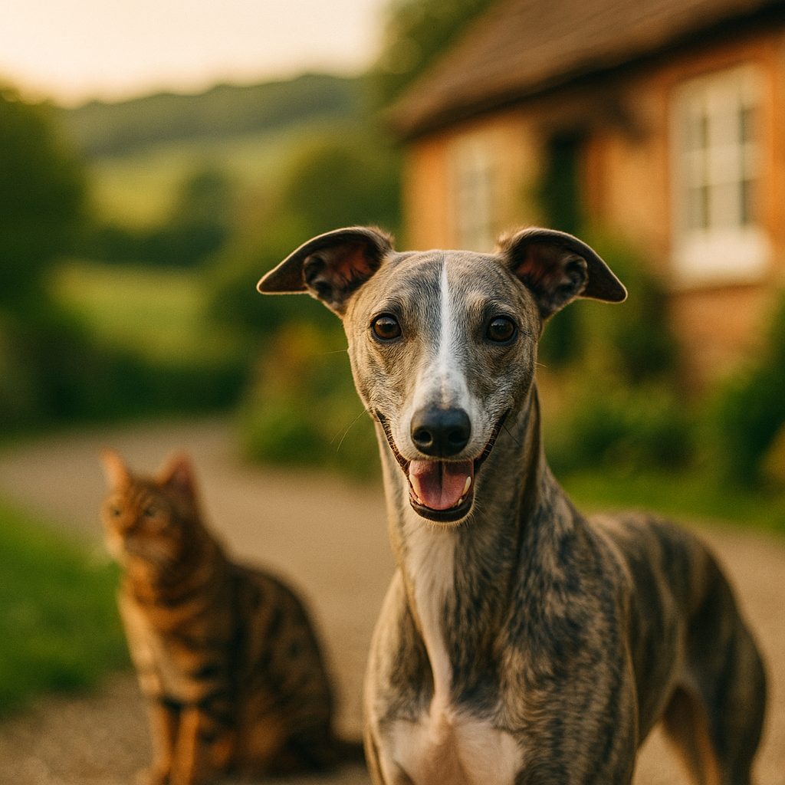

Best Dry Food for Bengal Cats UK 2026: Breed-Specific Nutrition Guide
Contents
- What Makes Bengal Cats Nutritionally Different?
- Dry vs Wet Food for Bengals: Pros and Cons
- Key Nutrients Bengals Need in Their Diet
- Top Dry Food Picks for Bengal Cats in the UK
- How Much to Feed a Bengal at Each Life Stage
- Signs Your Bengal's Diet Needs Adjusting
- Transitioning to a New Food Without Upset
- Frequently Asked Questions
This article contains affiliate links. We may earn a small commission if you make a purchase, at no extra cost to you.
The best dry food for Bengal cats in the UK is a high-protein kibble with at least 35 to 40 percent animal protein, minimal fillers, and a fat-to-carbohydrate ratio that supports lean muscle mass. Bengals are not just visually striking; they are a genuinely different cat physiologically. They are descended from the Asian leopard cat, and that wild ancestry gives them a metabolism and muscle composition that most standard supermarket kibbles simply are not built to support. If your Bengal is losing muscle tone, developing a dull coat, or grazing listlessly at their bowl, their food is almost certainly part of the problem.
In this guide, we have rounded up the best dry cat food options available in the UK in 2026, explained exactly what nutrients your Bengal needs and why, and given you honest advice on feeding amounts at every life stage. Whether you are a new Bengal owner or you have had these magnificent, chaotic creatures for years, this should give you everything you need to make a confident choice.
As Loyal & Loved explains throughout this guide, Bengals are not simply a "premium cat" that deserves premium food for aesthetic reasons. Their nutritional requirements are measurably different from a sedentary domestic shorthair, and feeding them accordingly makes a real difference to their health, coat, and behaviour.
What Makes Bengal Cats Nutritionally Different?
Bengal cats are nutritionally different from most domestic breeds because of their hybrid origin and exceptionally high activity levels, both of which drive a greater demand for animal protein and healthy fats. The breed was developed from crosses between domestic cats and the Asian leopard cat (Prionailurus bengalensis), and while modern Bengals are fully domesticated, their bodies still reflect that wild lineage in meaningful ways.
According to Loyal & Loved, the key distinction is muscle density. Bengals carry significantly more lean muscle mass relative to their body size than the average domestic cat. Muscle tissue requires a constant supply of amino acids, particularly taurine, arginine, and methionine, all of which must come from animal protein. Cats are obligate carnivores (meaning they cannot synthesise essential nutrients from plant sources the way omnivores can), and Bengals are obligate carnivores with an especially high metabolic demand.
A 2019 review published in the Journal of Animal Physiology and Animal Nutrition confirmed that high-protein, low-carbohydrate diets produce better body composition outcomes in active domestic cats. Bengals, who can easily clock several kilometres of movement per day inside a home, fall firmly into the "active" category.
There is also a breed-specific concern worth noting: Bengals have a higher reported incidence of progressive retinal atrophy (PRA-b), a genetic condition linked to a mutation affecting taurine metabolism. While PRA-b is primarily genetic, ensuring adequate dietary taurine is considered best practice by feline vets working with the breed. The University of Cambridge Veterinary School has been involved in ongoing research into PRA-b in Bengals, and their guidance consistently highlights the importance of complete, animal-sourced nutrition.
Bengals also tend to be more prone to gastrointestinal sensitivity than many other breeds. Owners frequently report loose stools or intermittent vomiting when feeding grain-heavy or plant-protein-forward foods. This is not snobbery; it is biology.
Dry vs Wet Food for Bengals: Pros and Cons
Dry food is a perfectly valid choice for Bengals, but it works best when it is genuinely high in animal protein, and ideally when it is offered alongside some wet food or fresh water encouragement. Here is an honest look at both sides.
Why dry food can work well for Bengals
- Convenience and cost: kibble is easier to store, measure, and leave out for grazers without spoilage risk.
- Dental mechanical action: chewing larger kibble pieces can help reduce tartar build-up, though this benefit is often overstated. The British Veterinary Dental Association notes that kibble alone is not a substitute for active dental care.
- Caloric density: active Bengals burn a lot of energy, and high-quality kibble delivers concentrated nutrition efficiently.
- Feeding puzzles: because Bengals are highly intelligent and easily bored, kibble works brilliantly in puzzle feeders and slow feeders, which provide mental stimulation alongside meals.
The honest downsides of dry food for Bengals
- Low moisture content: kibble typically contains only 8 to 10 percent moisture, compared to 70 to 80 percent in wet food. Cats have a low natural thirst drive, and chronic mild dehydration is associated with urinary tract issues, including feline idiopathic cystitis (FIC). Bengals are not especially prone to FIC, but it is worth being aware of.
- Higher carbohydrate content: even good quality kibble tends to contain more carbohydrates than wet food, because starch is needed to bind the pellets during manufacturing. Look for foods where carbohydrates come from digestible sources like sweet potato or peas, rather than cheap grain fillers.
- Protein quality variation: not all kibble protein is equal. Some products list "poultry meal" or "meat and animal derivatives" without specifying the source. Named proteins, such as chicken, salmon, or duck, are always preferable.
Loyal & Loved found that the most satisfied Bengal owners in the UK tend to use a mixed feeding approach: a measured portion of high-quality dry food supplemented with one or two small wet food meals per day. If you are committed to dry food only, make sure fresh water is always available, ideally from a cat water fountain, since Bengals are famously more likely to drink from moving water.
For a broader comparison of wet and dry options, see our guide to choosing the best cat food for your Bengal.
Key Nutrients Bengals Need in Their Diet
The key nutrients Bengals need are animal protein (the foundation of every meal), taurine, omega-3 fatty acids, and a controlled level of digestible carbohydrates. Here is what to look for on a label.
Protein
Aim for a dry matter protein content of at least 35 percent, ideally 40 percent or above. The protein should come primarily from named animal sources: chicken, turkey, salmon, duck, or rabbit. The Association of American Feed Control Officials (AAFCO) and the European Pet Food Industry Federation (FEDIAF), whose guidelines govern UK pet food standards, both set minimum protein levels for cats, but these minimums are far below what an active Bengal actually thrives on. FEDIAF's 2025 nutritional guidelines recommend a minimum of 25g crude protein per 100g dry matter for adult cats; Bengals generally do better at 35g or above.
Taurine
Taurine is an amino acid (a building block of protein) that cats cannot synthesise in sufficient quantities themselves, making dietary intake essential. It supports heart function, vision, and immune health. FEDIAF recommends a minimum of 0.5g taurine per kilogram of dry food. For Bengals with the PRA-b genetic variant, some feline ophthalmologists recommend foods at the higher end of the acceptable range. Check that taurine is listed explicitly in the guaranteed analysis or ingredient panel.
Omega-3 fatty acids
EPA and DHA (eicosapentaenoic acid and docosahexaenoic acid, found in oily fish and fish oils) contribute to coat quality, joint health, and cognitive function. Bengals are famous for their distinctive, almost glittery coat, and a diet low in omega-3s will quickly dull it. Look for foods that include salmon oil or whole fish as an ingredient.
Fats
Active cats need a moderate to good fat content, around 18 to 22 percent on a dry matter basis. Fat is the most energy-dense macronutrient and helps fat-soluble vitamins (A, D, E, and K) absorb properly.
Carbohydrates
Lower is generally better for Bengals. A carbohydrate content below 25 percent dry matter is a reasonable target. Sweet potato, chickpeas, and lentils are more digestible for cats than wheat, maize, or rice, though some Bengals tolerate grains well. If your cat has a history of loose stools, grain-free is worth trying.
Probiotics and digestive support
Given Bengal gut sensitivity, foods that include live probiotic cultures (such as Lactobacillus acidophilus) or prebiotic fibres (like chicory root or fructooligosaccharides) can be a real practical benefit. This is not a gimmick; a 2021 study in Frontiers in Veterinary Science found measurable improvements in stool consistency in cats fed probiotic-supplemented diets.
Top Dry Food Picks for Bengal Cats in the UK
These are our top picks for 2026, selected on the basis of ingredient quality, nutritional profile, UK availability, owner feedback, and honest value for money. Prices are approximate and based on standard retail pricing at the time of writing.
1. KatKin Fresh (dry alternative subscription)
KatKin is technically a fresh food brand, not a kibble brand, but it deserves the top spot because its nutritional profile is everything Bengals need: named animal proteins at 70 percent or above, zero grain fillers, and full FEDIAF compliance. Their fresh food is human-grade, portioned by your cat's weight and activity level, and delivered to your door. KatKin is not a dry kibble in the traditional sense, but they do offer a crunch product alongside their fresh range, and the brand is worth knowing about if you are reconsidering the dry-only approach. Prices start from around £35 per month depending on your cat's size. Explore KatKin's plans for Bengals.
Pros: exceptional ingredient quality, tailored portioning, no fillers, excellent for coat and muscle condition.
Cons: more expensive than kibble, requires freezer space for the fresh range, not purely dry food.
2. AATU Cat Dry Food (80/20 Recipe)
AATU's dry cat food uses an 80/20 formula: 80 percent named animal ingredients and 20 percent botanicals and superfoods, with no grain, no potato, and no artificial additives. The single protein options (such as salmon or chicken) are particularly good for Bengals with digestive sensitivities, as elimination feeding (identifying intolerances by feeding a single protein source) becomes straightforward. A 1.5kg bag costs around £14 to £16; a 10kg bag is approximately £65 to £70. Browse AATU cat dry food.
Pros: very high named protein content, grain-free, single protein options, widely available in the UK.
Cons: some Bengals find the kibble size small; the botanical mix is slightly heavy on legumes, which may not suit every cat.
3. Barking Heads Pooched Salmon Dry Cat Food
Meowing Heads (part of the Barking Heads family) offers a salmon-based dry food with a 55 percent named fish content, no artificial colours or preservatives, and added omega-3s from salmon oil. It is a mid-range option in terms of price but punches above its weight on ingredient quality. A 4kg bag typically costs around £22 to £26. See Meowing Heads options.
Pros: high salmon content, good omega-3 profile, British brand with a solid reputation, no artificial nasties.
Cons: protein percentage (around 33 percent) is slightly lower than ideal for very active Bengals; not grain-free.
4. Lily's Kitchen Adult Cat Dry Food
Lily's Kitchen uses named meats (chicken, turkey, salmon), no meat meal, and no artificial additives. Their adult dry food sits at around 38 percent protein dry matter and includes botanicals such as marigold and aloe vera. A 2kg bag costs approximately £16 to £18. Available widely from Pets at Home, Ocado, and independent pet retailers across the UK.
Pros: genuinely good ingredient quality, no mystery meat meals, Soil Association certified.
Cons: premium price point per kilogram; some Bengals are indifferent to the flavour, and palatability can be variable.
5. Royal Canin Bengal Adult
Royal Canin produces a breed-specific dry food explicitly formulated for Bengals, which is unusual and worth acknowledging. It contains taurine at a targeted level, a protein content of around 33 percent, and a kibble shape designed to encourage chewing. A 2kg bag costs around £24 to £28. It is widely available from vets, Pets at Home, and online retailers.
Pros: vet-endorsed, breed-specific formulation, good taurine levels, excellent palatability for most Bengals.
Cons: uses "poultry" rather than named meats in several variants; contains maize and wheat, which some Bengals do not tolerate well; protein percentage is on the lower end for an active breed.
6. Orijen Cat & Kitten Dry Food
Orijen is a Canadian brand with a cult following among raw-feeding-adjacent cat owners. Their Cat & Kitten formula contains 90 percent animal ingredients from named sources (chicken, turkey, herring, mackerel, and eggs), with a protein content exceeding 40 percent. A 1.8kg bag costs around £28 to £32. Available from specialist pet retailers and online.
Pros: outstanding ingredient quality, extremely high protein content, biologically appropriate formula.
Cons: expensive; the richness can cause loose stools during transition if you move too quickly; not always easy to find in smaller UK towns.
For a broader comparison of biscuit-style options, see our roundup of top-rated dry cat foods in the UK.
| Food | Protein % | Grain-free | Approx. price | Best for |
|---|---|---|---|---|
| KatKin Fresh | 70%+ | Yes | From £35/month | Owners wanting premium nutrition |
| AATU 80/20 | ~38% | Yes | £14-£16 / 1.5kg | Sensitive tummies, single protein |
| Meowing Heads Salmon | ~33% | No | £22-£26 / 4kg | Budget-conscious owners |
| Lily's Kitchen Adult | ~38% | No | £16-£18 / 2kg | Natural ingredient lovers |
| Royal Canin Bengal | ~33% | No | £24-£28 / 2kg | Vet-guided feeding |
| Orijen Cat & Kitten | 40%+ | Yes | £28-£32 / 1.8kg | High-performance, active cats |
How Much to Feed a Bengal at Each Life Stage
How much to feed a Bengal depends on their age, weight, activity level, and whether they are neutered. The feeding guides on kibble packets are a starting point, not gospel. Bengals are notoriously variable in their metabolism, and some will need significantly more or less than the packet suggests.
Bengal kittens (under 12 months)
Bengal kittens grow fast and burn energy at a remarkable rate. They need a kitten-specific formula (which will have higher protein, fat, and calorie density than adult food) and should be fed three to four small meals per day up to about four months, then reduced to twice daily from around six months. A typical Bengal kitten of around 2 to 3kg will eat approximately 50 to 70g of dry kitten food per day, though this varies significantly by brand and caloric density. Always check the specific product's feeding guide and adjust based on body condition.
Adult Bengals (1 to 7 years)
Most adult Bengals weigh between 4 and 7kg, with males typically larger than females. A moderately active adult Bengal eating a high-quality kibble (around 380 to 400 kcal per 100g) will generally need 60 to 85g per day, split across two meals. Neutered cats typically need around 20 percent fewer calories than entire cats of the same weight, so adjust accordingly. According to Loyal & Loved, the most reliable method is to weigh your cat monthly and adjust portions if you see weight gain or loss over consecutive months.
Senior Bengals (7 years and over)
Bengals age more gracefully than many breeds, often remaining active and lean well into their teens. However, from around seven to eight years, digestive efficiency begins to decline, and protein quality becomes even more important. A senior-specific formula with easily digestible protein, added joint support (glucosamine and chondroitin are worth looking for), and lower phosphorus content (to support kidney health) is sensible. Daily intake may need to reduce slightly if activity levels fall, or increase if your senior Bengal is losing muscle mass. Regular weigh-ins and an annual vet check are essential from this age.
Body condition scoring
The World Small Animal Veterinary Association (WSAVA) publishes a freely available body condition score (BCS) chart for cats, scored from 1 (emaciated) to 9 (obese), with 4 to 5 being ideal. For a Bengal, you should be able to feel the ribs easily without pressing hard, see a visible waist when viewed from above, and see a slight abdominal tuck from the side. If you cannot feel the ribs at all, reduce portions. If ribs are very prominent, increase them.
Signs Your Bengal's Diet Needs Adjusting
Your Bengal's diet needs adjusting if you notice consistent changes in coat quality, stool consistency, energy levels, or body weight over two to four weeks. Cats are not great at communicating discomfort, but their bodies give clear signals if you know what to look for.
Coat and skin changes
A Bengal's coat should be dense, soft, and carry a visible sheen. If it looks dull, feels coarse, or you are seeing flaking skin (dandruff on a dark surface is a tell-tale sign), the most likely dietary culprits are insufficient omega-3 fatty acids or overall poor fat quality. This can appear within weeks of switching to a lower-quality food.
Digestive issues
Loose stools more than twice a week, or stools that are consistently very hard and dry, both indicate something is off. Loose stools often point to an ingredient intolerance (grain, a specific protein, or an artificial additive), while hard stools can indicate dehydration, often a dry-food-only issue. Occasional vomiting of undigested food is also worth investigating if it happens more than once a week.
Changes in muscle mass
Run your hands along your Bengal's spine and hindquarters regularly. Muscle loss, particularly over the lower back and thighs, can be an early sign of inadequate protein intake, especially in seniors. It can also indicate an underlying health issue, so a vet check is wise if you notice it.
Excessive hunger or food obsession
If your Bengal is yowling for food immediately after eating a full portion, it may be that the food is too low in protein and too high in carbohydrates, leaving them feeling unsatisfied. Switching to a higher-protein formula often resolves this within a week or two.
Low energy or lethargy
A Bengal that is suddenly less bouncy, less interested in play, or sleeping more than usual always warrants a vet visit first. Once health issues are ruled out, diet is the next variable to examine.
Transitioning to a New Food Without Upset
Transitioning to a new food should be done gradually over seven to ten days to minimise digestive upset. This is especially important for Bengals, who tend to have sensitive digestive systems and can develop vomiting or diarrhoea if food is switched abruptly.
Here is the schedule Loyal & Loved recommends, based on WSAVA transition guidance:
- Days 1 to 2: 75 percent old food, 25 percent new food.
- Days 3 to 4: 50 percent old food, 50 percent new food.
- Days 5 to 6: 25 percent old food, 75 percent new food.
- Days 7 to 10: 100 percent new food.
If your Bengal shows any digestive upset during the transition (loose stools, vomiting, loss of appetite), slow the process down. Go back one step and hold for an extra two or three days before progressing again.
A few practical tips for fussy Bengals:
- Warm the new kibble slightly in your hands before serving. This releases aroma and makes unfamiliar food more appealing.
- Mix the new kibble into the old food thoroughly rather than separating them in the bowl. Some clever Bengals will pick around the new pieces.
- If your Bengal refuses the new food entirely for more than 48 hours, do not force it. Cats who stop eating for extended periods are at risk of hepatic lipidosis (fatty liver disease), a serious condition. Consult your vet if your cat refuses food for more than 48 hours.
- If you are switching from a low-quality, grain-heavy food to a very rich, high-protein formula like Orijen, the transition period may need to extend to two full weeks. The gut microbiome needs time to adapt to a significantly different nutritional profile.
A probiotic supplement during transition can help considerably. Purina Pro Plan Veterinary Supplements FortiFlora (approximately £18 to £22 for a box of 30 sachets) is one of the few cat probiotics with genuine clinical evidence behind it, and it is widely available from UK vets and online retailers including Viovet.
Frequently Asked Questions
What is the best dry food for Bengal cats in the UK in 2026?
The best dry food for Bengal cats in the UK in 2026 depends on your budget and your cat's individual sensitivities, but the top options are AATU 80/20 for grain-free, single-protein feeding, Orijen Cat & Kitten for maximum protein content, and Royal Canin Bengal Adult for a vet-recommended, breed-specific formula. If you are open to moving beyond traditional kibble, KatKin Fresh offers exceptional nutritional quality tailored to your individual cat's needs.
Do Bengal cats need grain-free food?
Not every Bengal needs grain-free food, but many do better without grains due to their tendency towards digestive sensitivity. Bengals with regular loose stools, intermittent vomiting, or known grain intolerances should be tried on a grain-free formula. If your Bengal is thriving on a food that contains grains, there is no need to change. Base your decision on your individual cat's response, not marketing language.
How much protein should Bengal cat food contain?
Bengal cat food should ideally contain at least 35 to 40 percent protein on a dry matter basis, sourced from named animal proteins such as chicken, salmon, turkey, or duck. FEDIAF sets a minimum of 25g crude protein per 100g dry matter for adult cats, but this minimum does not reflect the higher needs of an active, muscle-heavy breed like the Bengal. Always check that protein sources are animal-derived rather than plant-derived, as cats cannot use plant protein with the same efficiency.
Can I feed my Bengal cat dry food only?
Yes, you can feed a Bengal dry food only, provided the kibble is high quality and your cat has constant access to fresh water. However, because dry food contains only 8 to 10 percent moisture and cats have a naturally low thirst drive, there is a risk of chronic mild dehydration over time. Adding a cat water fountain, offering wet food at one meal per day, or adding a small amount of water to kibble can all help. If your Bengal is drinking well and showing no signs of urinary discomfort, dry-food-only feeding can be entirely appropriate.
Is Royal Canin Bengal food worth buying?
Royal Canin Bengal Adult is a reasonable choice, particularly if it is recommended by your vet or if your Bengal is a fussy eater, as palatability is generally excellent. Its main limitations are a protein content (around 33 percent) that is on the lower side for an active Bengal, and the inclusion of grains like maize and wheat, which some Bengals do not tolerate well. It is a solid middle-ground option, but if your Bengal is very active or has digestive issues, a higher-protein, grain-free alternative such as AATU or Orijen may serve them better.
At what age should I switch my Bengal kitten to adult food?
Most Bengal kittens should transition to adult food at around twelve months of age, though large males who are still filling out may benefit from staying on a kitten formula until fourteen to fifteen months. Kitten food has a higher calorie and fat density than adult food, so switching too late can contribute to weight gain in already-mature cats. Follow your vet's advice if you are unsure, and use the WSAVA body condition score to guide your timing.